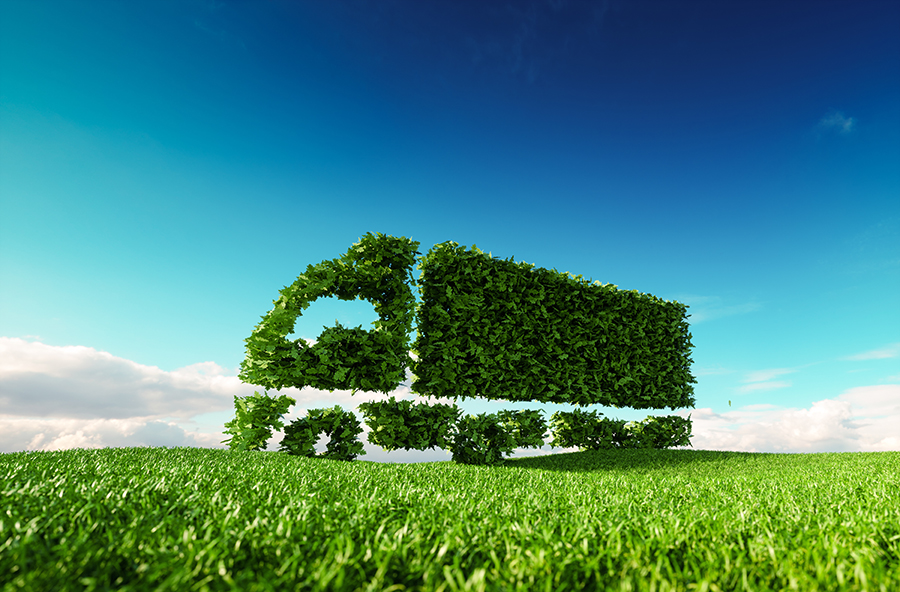
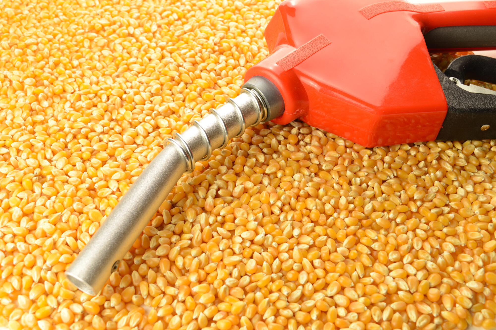
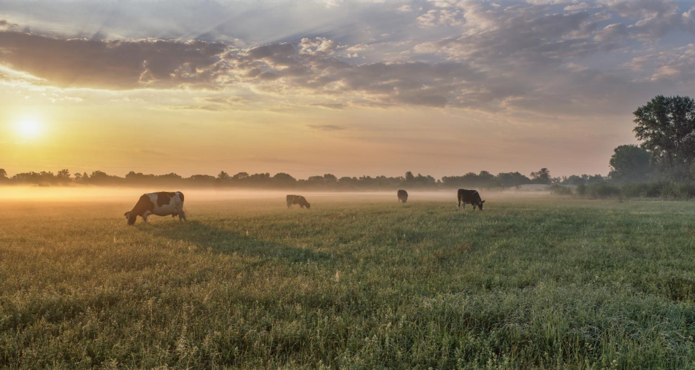

¿Qué son los biocombustibles?
Te explicamos qué son los biocombustibles y cómo se obtiene cada uno. Además, las ventajas que presentan y tipos de biocombustibles.
Aprendamos un poco!
Los biocombustibles son aquellos combustibles que se obtienen a partir de la biomasa o de los desechos orgánicos (de allí su nombre). La biomasa es materia orgánica proveniente de un vegetal u animal.
Hablemos del Biogas
Es el resultado de una mezcla de gases que se descomponen de materia orgánica a través de acciones bacterianas.